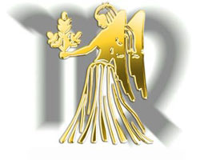

|
Общий гороскоп Дева
(24 августа - 23 сентября)
Влияние: Меркурий.
Счастливое число: 3,5,6,12,20,27.
Символы: дева, куб.
Цвета: белый, голубой, фиолетовый, светло-голубой и зеленый.
Камни: агат, яшма, нефрит, сердолик, карнелит, малахит, топаз, хризопраз, мрамор, изумруд.
Цветы: астра, мать и мачеха, красные маки.
Металл: олово, медь.
Талисман: кузнечик, астра.
Анатомическая эмфаза: печень, желудок, кровь, кишечник, нижние конечности, общая нервозность.
Счастливый день - среда.
Неудачные дни - четверг, пятница.
ОБЩАЯ ХАРАКТЕРИСТИКА ЛИЧНОСТИ:
Меркурий, быстроногий посланник богов, правит Девой и Близнецами, но влияет на эти знаки по-разному. Дева - земной знак, и Меркурий в своем влиянии на Деву ведет себя более практично, чем во влиянии на воздушный знак Близнецов, где он ветренен и независим.
Люди знака Девы обладают сильно развитым аналитическим умом, все время пытаются все свести к своим основным нуждам и приклеивают ярлыки ко всему, что они видят. Они обладают острым чувством вкуса, времени, слуха и обоняния. Знак символизируется Девой. Это не значит, что они чисты и выше всего земного, но их изумительные способности наблюдать, позволяют им видеть все человеческие недостатки. Обычно им не нравится все, что они видят, и они удаляются, подобно Деве.
Они часто погружаются в работу. Да, работа - это бог Девы. Они преуспевают в логике, последовательности и дисциплине.
В отличие от других знаков, воздушных кузнецов - Близнецов, Дева не так легко выходит из себя. Она очень замкнута и, возможно, не в меру осторожна. Большинство людей знака Девы в высшей степени независимы и верят, что уверенность в своих силах и самоуважение дают человеку счастье и спокойствие ума. Их поведение доминируется их интеллектуальными интересами. Их "райский уголок" существует только в области ума, в его тайнах и достижениях.
Дева - прирожденный критик. И обычно критика Девы справедлива, но она глубоко ранит. Людям этого знака следует понять, что критика, которая неприятна и глубоко ранит, редко достигает своей цели. Они редко хвалят и никогда не захваливают. Самая трудная борьба для них это борьба против компромиссов. Возможно им следует надеть очки с розовыми стеклами и смотреть на жизнь с меньшим цинизмом, для них существует опасность стать мизантропами.
Так как люди знака Девы наделены такими острыми аналитическими возможностями, они должны больше, чем остальные бороться для выработки более светлых сторон своей личности. Они часто становятся рабами дома и жертвами незначительных деталей, проходя мимо более важных вещей. Когда они смогут придержать свои аналитические и критические способности, они смогут подняться до высочайших вершин. Из них выходят способные организаторы, выдающиеся администраторы, управляющие и директора крупных заводов. Наибольшая опасность, которая стоит на их пути к успеху - это то, что они могут потерять простую способность радоваться удовольствиям жизни.
Также есть возможность стать холодным и безжалостным. Но Дева редко принимает помощь и симпатию для избежания такой опасности, потому что фасад самоконтроля скрывает внутренний беспорядок. Меркурий, правящая планета, наделяет своих подданных долгой жизнью, большинство Дев выглядит моложе своего возраста.
ПСИХОСЕКСУАЛЬНАЯ ХАРАКТЕРИСТИКА:
Люди знака Девы относительно холодны и сдержаны в удовольствиях любви. Они как бы отпечатывают в своем мозгу свое поведение и поведение партнера. Вообще, отдаются опьяняющему очарованию любви один раз в жизни, обычно, когда они очень молоды, а опыт учит нас, что редко юношеские идеалистические романы выдерживают проверку времени. После первого разочарования в любви Девы принимают стоическую клиническую точку зрения: это ненужный, вышедший из моды миф! Страх разочарования объясняет осторожное отношение Девы к любви и сексу. Из-за своей чрезмерной критической, сверханалитической, слишком предусмотрительной и разборчивой личности, Девы часто считают секс шуткой природы, данной человеку для продолжения рода. Когда они занимают такую негативную, самоотреченную позицию, они видят только боль страдания в любви и мало радости и восторга. К сожалению, именно эти недостижимые нормы Девы заставили астрологов символизировать этот знак Девой.
Таким образом, Девы числятся среди великих "уединенных" в зодиакальной семье, ах, как часто сводят удовольствия любви к редким изолированным моментам, происходящим только по необходимости.
Когда все-таки Дева находит контакт с противоположным полом, она редко сердечна и страстна. Эти люди скорее снобы, с кем они будут общаться в безопасной зоне интеллектуальности, которые прерываются с клинической строгостью Девы в области любви.
Девы всегда искусны во всем (если они сами этого хотят), даже в сексе. Но в этих случаях, когда решают продемонстрировать свое мастерство, это обыкновенная бравада ради похвалы. Они хотят убедить себя и людей в том, что они тоже могут стать страстными и человечными.
Но, возможно, мы слишком суровы с нашими Девами. Многие из них осведомлены о своей холодной сдержанности и пытаются показать привязанность, добавляют огня к своей работе. Девы могут ненавидеть напыщенные проявления любви и не выносят, когда их ласкают.
Девы все хорошо видят и замечают, и к сожалению, не могут не высказывать все это другим людям, не думая о последствиях. Девы редко лгут и никогда не лгут сами себе.
Но обратимся к положительным качествам Девы. Когда в супружестве эта холодность со стороны Девы уже обнаружена и принята положительно, они остаются верными и надежными супругами. Мужчины-Девы хорошо снабжают семью, а женщины становятся точными, исполняющими долг женами.
НЕСЕКСУАЛЬНЫЕ МАНЕВРЫ:
Вообще Девы не могут контролироваться сексом, и это дает им большое преимущество в практике несексуальных маневров. Положительный тип Девы всегда следует строгим законам справедливой игры и отказывается использовать свой ум для обмана людей. Отдельные типы, однако, очень удобно себя чувствуют, направляя свою энергию на области более конструктивного характера, а не на карусель многочисленных романов. Эти независимые и привередливые типы ожидают, что люди проникнутся любовью к их планам и будут неустанно работать вместе с ними, чтобы добиться их целей. В супружестве Девы требуют, чтобы их партнеры действовали гладко и сдержанно. Эти типы похожи на старшину роты, всегда назначают точное время и место. Все должно быть в "девственном" порядке.
ПОЛОЖИТЕЛЬНЫЕ ЧЕРТЫ:
Теперь можно сделать комплимент нашим Девам, т.к. они примут его со скромностью. У них есть много черт, достойных восхищения: они такие логичные, чувственные и систематичные люди, но скорее более интеллектуальные, чем эмоциональные, более практичные, нежели сентиментальные. Они могут брать на себя большую ответственность.
В отношениях с друзьями они не очень щедры на похвалу, не очень сочувственны и сердечны, но они тверды, последовательны и дают искренние советы. Дети Меркурия могут быть интересными и многосторонними, хотя и с изменчивым настроением: то горячие, то холодные, иногда их поступки нельзя предсказывать.
Люди знака Девы не очень общительны, но располагают достаточным умом, чтобы понять, что это качество ценно и помогает им расслабиться и дать больше самоуверенности.
ОТРИЦАТЕЛЬНЫЕ ЧЕРТЫ:
Люди знака Девы, обладая способностью хорошо разбираться в людях, не должны становиться интеллектуальными снобами. Их правящая планета Меркурий наделяет их аналитическими способностями, но они не должны быть слишком критичными по отношению к людям. Не все выносят резкую критику. Т.к. Девы увлекаются страстно работой, они могут стать рабами ее и отрицать семью, друзей и развлечения, что опустошает их физически и умственно. Ими можно восхищаться за их неустанную борьбу за совершенство, но они не должны уделять внимания деталям и проходить мимо более важных дел.
КАК СОБЛАЗНИТЬ МУЖЧИНУ-ДЕВУ:
Чтобы покорить мужчину этого знака, нужно узнать о нём всё: все его достоинства и недостатки, «плюсы» и «минусы». Ведь при обольщении Девы нужно знать, какие струны его загадочной души задеть, чтобы он от любви к вам потерял голову. Среди всех его положительных качеств вы должны учесть следующие моменты: это интеллектуал; аккуратность и чистоплотность — его неизменные качества; ценит в общении простоту и искренность; очень верен, но не в браке, а в любви: если влюбляется, то изменить не сможет. Очень интересные люди, романтичные мужчины, верные мужья и страстные любовники, мужчины-Девы, однако, обладают и недостатками, которые вы тоже сможете обернуть в свою пользу. Ведь как завоёвывают мужчин-Дев опытные соблазнительницы? Воздействуют на его самые слабые места. Мужчины этого знака Зодиака: влюбляются редко; очень ироничны; ранимы и чувствительны; беззаветно любят своих матерей; консерваторы: яркий макияж и слишком короткая юбка девушки могут спугнуть его. Теперь вы понимаете, как нелегко будет завоевать сердце такого мужчины? Однако оно того стоит! Учитывая характер, интересы и отношение Дев мужского пола к женщинам и любви, можно выработать план-стратегию по захвату этой крепости. Как покорить сердце мужчины-Девы? Чтобы добиться поставленной цели, вы должны чётко представлять себе, как завоевать сердце мужчины-Девы, следуя ежедневно намеченному плану. Поначалу вам будет казаться, что ничего не получится, что крепость остаётся по-прежнему неприступной, загадочной и непонятной. Но шаг за шагом, набравшись терпения, вы сможете наконец добиться того, чтобы этот «крепкий орешек» раскололся. А действовать придётся по следующему плану. Старайтесь ему не показать, что он вам нравится: никакого кокетства и наигранности в вашем поведении быть не должно. Будьте естественны и непринуждённы с ним. Для покорения Девы вам не понадобится яркий макияж, ведь Дева — ярый консерватор. Узнайте, какие вопросы его интересуют, прочтите умную книжку и заговорите с ним об этом: Дева-интеллектуал будет сражён вашей начитанностью наповал. Будьте готовы не обижаться на его своеобразную иронию и шутки: покажите ему, что вы понимаете его чувство юмора. Но сами не оттачивайте своё чувство юмора на нём: это может его сильно ранить и навсегда отвратить от вас. Вы должны быть во всём чистоплотны и аккуратны: мужчина-Дева никогда не выберет неряшливую женщину. Никогда плохо не отзывайтесь о его маме: напротив, изъявите желание познакомиться с ней поближе. Если технично и терпеливо выполнять данную инструкцию, можете поверить: сердце этого обаятельного парня будет принадлежать только вам. Теперь вы знаете, как завоевать любовь мужчины-Девы, но это — только полдела: а вот как заставить его жениться? Тут всё гораздо проще: заставлять не придётся. Если мужчина-Дева влюбится, тащить к венцу его вам не придётся. Это один из самых романтических знаков Зодиака, для которого свадьба — логическое продолжение серьёзных отношений с девушкой.
ЭРОГЕННЫЕ ЗОНЫ:
Для нормальной половой жизни просто необходимо знать эрогенные зоны партнера, а любовная игра, в первую очередь, заключается в стимуляции этих зон.
Зоны эти в основном одинаковы у мужчин и женщин, чаще всего это рот, грудь, половые органы, но могут быть и в других местах: на ухе, шее, вдоль позвоночника, на внутренней поверхности бедер и т.д. У большинства женщин самый возбудимый участок — клитор, у мужчин — головка пениса.
Слух, зрение, обоняние могут повышать половое возбуждение или сдерживать его. Говорят, что мужчина любит глазами, а женщина — ушами, но здесь все должно быть в пределах разумного. Если мужчину обнаженное женское тело возбуждает, то женщину вид мужских гениталий возбуждает не всегда. Мужчинам же легче что-то сделать, чем объяснить. Нельзя забывать и о чистоте тела. Запах чисто вымытых половых органов может возбуждать партнеров, запах же немытого тела не спасет даже флакон одеколона.
Эрогенные зоны Девы: Когда вы дошли в ваших отношениях до откровенных ласк, не забудьте "про живот".
У Девы все - от промежности до груди - реагирует на прикосновения языка, легкие поглаживания пальцами или чуть заметные касания волосами. Проведите ногтем горизонтально по телу - это вызовет необыкновенные ощущения.
Хорошо возбуждают поглаживания области живота губкой, мылом и теплой водой. Деве очень нравится, когда струя воды из душа попадает туда же. Не забудьте об этом, если вы сперва оказались в душе (что очень удачно, поскольку у Девы "идея фикс" - чистота).
Лежа в постели, сделайте легкий массаж в области пупка. Завершите его прикосновением кончика языка к самому пупку. Вы увидите, как быстро это подействует.
[1]
[2]
[3]
|


 Тайна имени
Тайна имени Солнце в знаке Дева
Солнце в знаке Дева